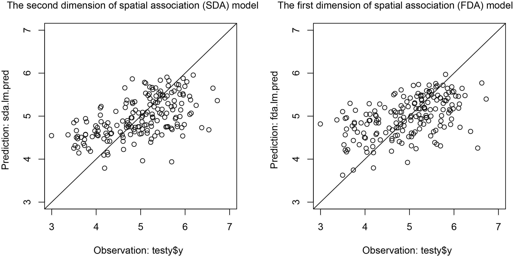

`SecDim` Package for The Second Dimension of Spatial Association
Yongze Song
2024-08-30
Source:vignettes/SecDim.Rmd
SecDim.Rmd
Introduction to SecDim package
Install and use the package SecDim
## install and library the pacakge
install.packages("SecDim")
library("SecDim")Here is an example of the spatial prediction using SDA models.
- Preparing data
# spatial data of response variables
data("obs")
# spatial data of optional SDA explanatory variables:
# b = 1, 3, 5, 7, and 9 km
# tau = seq(0, 1, 0.1)
# eight variables
data("sample_vars_sda")- Data pre-processing: logarithm transformation and removing outliers
obs$y <- obs$Cr_ppm
hist(obs$y)
obs$y <- log(obs$y)
hist(obs$y)
krm <- rmvoutlier(obs$y)
y <- obs$y[-krm]
x <- lapply(sample_vars_sda, function(x) x[-krm,])- selecting the second dimension variables for SDA models
system.time({ # ~2s
sx <- selectvarsda(y, xlist = x)
})- SDA modeling
- comparing with FDA
data("sample_vars_fda")
data.fda <- data.frame(y, sample_vars_fda[-krm,])
fda.lm <- lm(y ~., data.fda)
summary(fda.lm)
Cross validation

Figure 1. Comparison of cross
validation between SDA and FDA models for spatial predictions.
## install and library the pacakge
install.packages("SecDim")
library("SecDim")
R2 <- function(o, p) 1 - sum((o-p)^2)/sum((o-mean(o))^2)
## Example
# spatial data of response variables
data("obs")
# spatial data of optional SDA explanatory variables:
# b = 1, 3, 5, 7, and 9 km
# tau = seq(0, 1, 0.1)
# eight variables
data("sample_vars_sda")
# data pre-processing: logarithm transformation
obs$y <- obs$Cr_ppm
hist(obs$y)
obs$y <- log(obs$y)
hist(obs$y)
################################################
## SDA cross validation
################################################
# cross validation: 70% training and 30% testing
set.seed(100)
train <- sample(nrow(obs), 0.7*nrow(obs), replace = FALSE)
trainy <- obs[train,]
testy <- obs[-train,]
trainx <- lapply(sample_vars_sda, function(x) x[train,])
testx <- lapply(sample_vars_sda, function(x) x[-train,])
# removing outliers for training data
krm <- rmvoutlier(trainy$y)
trainy <- trainy$y[-krm]
trainx <- lapply(trainx, function(x) x[-krm,])
# generating explanatory variables for testing data
sdaxv <- sdapredvars(testx)
# selecting the second dimension variables for SDA models
system.time({ # ~1.8s
sx <- selectvarsda(y = trainy, xlist = trainx)
})
# SDA modeling and prediction
data.sda <- cbind("y" = trainy, sx)
sda.lm <- lm(y ~., data.sda)
sda.lm.pred <- predict(sda.lm, newdata = sdaxv)
R2(testy$y, sda.lm.pred)
plot(testy$y, sda.lm.pred, xlim = c(3, 7), ylim = c(3, 7))
################################################
## FDA cross validation
################################################
data("sample_vars_fda")
# cross validation: 70% training and 30% testing
set.seed(100)
train <- sample(nrow(obs), 0.7*nrow(obs), replace = FALSE)
trainy <- obs[train,]
testy <- obs[-train,]
trainx <- sample_vars_fda[train,]
testx <- sample_vars_fda[-train,]
# removing outliers for training data
krm <- rmvoutlier(trainy$y)
trainy <- trainy$y[-krm]
trainx <- trainx[-krm,]
# FDA modeling and prediction
data.fda <- data.frame("y" = trainy, trainx)
fda.lm <- lm(y ~., data.fda)
fda.lm.pred <- predict(fda.lm, newdata = data.frame(testx))
R2(testy$y, fda.lm.pred)
plot(testy$y, fda.lm.pred, xlim = c(3, 7), ylim = c(3, 7))